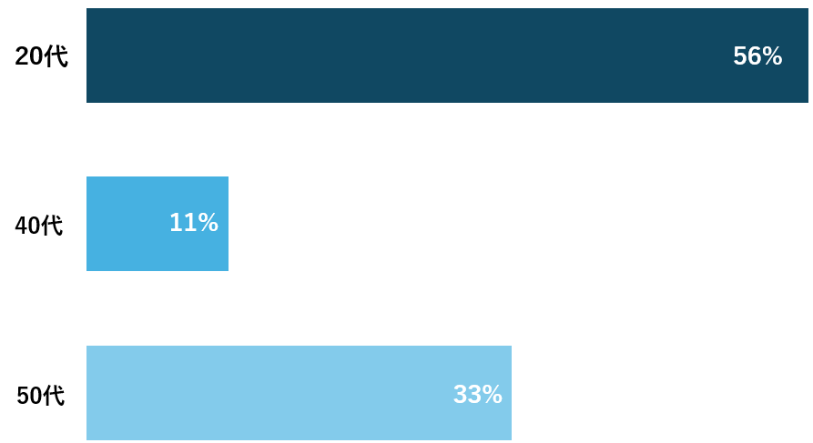

DATA
データで見るユーテック
企業情報
創立

7年
売上

4717万円
社員1人あたり売上高

1573万円/人
創立：7年
ユーテックは、設立から7年と、比較的まだ歴史の浅い会社です。昔からニーズのある堅実な事業分野において、未だ満たしきれないニーズに対する独自のアプローチを提案できる会社を目指しています。
売上：4717万円
ユーテックは小回りの利くサービスを強みとし、お客様の悩みに真摯に向き合うことで堅実に事業を成功させています。結果として売上は4期連続2桁成長を達成しました。
2024年5月期
社員1人あたり売上高：1573万円/人
パッケージソフトウェア業と受託開発ソフトウェア業との両方の特性を持つビジネスモデルで、社員一人一人が高い成果を上げています。
2024年5月期
営業利益率

9.3%
保守ユーザ数

12社
営業利益率：9.3%
営業利益率は、企業が本業でどれだけ効率的に利益を上げているかを示す重要な指標であり、業界によって標準的な水準は異なります。ユーテックは安定した成長を目標とし、比較的高い割合を保持しています。
2024年5月期
保守ユーザ数：12社
企業の業績が安定する条件として、特定の取引先に対して依存し過ぎないことが必要だと言われています。既存取引先を大切にしながら、新規取引先の開拓を積極的に進めています。
2024年9月時点
保守ユーザ地域

東海
33%
東北
25%
関東
25%
近畿
17%
保守ユーザ地域
本社は宮城県にありますが、東北地方のお客様は全体の1/4ほどです。お客様の紹介を通じた新たな出会いも多く、Web会議や出張により、拠点に縛られることなく様々な地域のお客様と関係を続けることができています。
2024年9月時点
働く人
従業員数

9人
男女比

平均年齢

33.9歳
従業員数：9人
正社員、パートを含めた、現在の従業員総数です。近年は、新卒採用を積極的に行っており、徐々に従業員数を拡大していく予定です。
2025年4月時点
男女比： 2：8
ユーテックでは自社で開発ができるため、男女問わず社員のライフスタイルに合わせた柔軟な働き方が可能です。また、実際に多くの女性社員が活躍しています。IT業界で働く女性のイメージがあまり浮かばないという方はインターンや会社訪問を通じて一度話を聞いてみてください。
平均年齢：33.9歳
現在、ベテランが若手の活躍を支える体制ができつつあります。経験豊富な先輩のもとで、安心して新しい挑戦ができる環境です。
2025年4月時点
年代比率
20代
56%
40代
11%
50代
33%
年代比率
20代の割合が最も多く、次いで50代の割合が多くなっています。新卒採用を積極的に行う方針のため、今後は20代社員の割合がさらに増加する見込みです。
2025年4月時点
文系・理系の割合

情報系の学部出身者

0%
文系83.3%、理系16.7%
文系にはIT業界は難しいと考える方も多いかと思います。ユーテックでは、文系・理系を問わず、様々な学部や得意分野の社員が集まっています。
情報系の学部出身者：0%
情報系以外の学部出身者も積極的に採用しています。情報系の分野に知識の偏りがないことは、お客様とのやり取りが中心の上流工程において、システムのことをよく知らないお客様と同じ目線に立って考えることができる点で大きな強みとなります。
働き方
年間休日

127日
有休取得率

63.6%
月平均残業時間

1.24時間
年間休日：127日
完全週休二日制で、土・日・祝日を休日としています。その他にも夏季休暇や年末年始休暇、育児・産後休暇など、時期やライフスタイルに応じた休暇制度もあります。
2024年1月~12月
有休取得率：63.6%
ユーテックには明確な繁忙期はなく、仕事のペースはお客様とのやり取りによって決まり、無理のないスケジュールを組んでいます。お客様との都合を合わせることで、比較的自由に有休を取得することができています。
正社員のみ算出（2023年4月~2024年3月実績）
月平均残業時間：1.24時間
入社1～2年目の社員は、基本的にあまり残業をしていません。それ以降においても相談しながら進めていきます。休みを取るために前倒しで仕事を進める、いいものを作れそうだから没頭したいなど、前向きな残業が中心です。
2023年4月～2024年3月実績